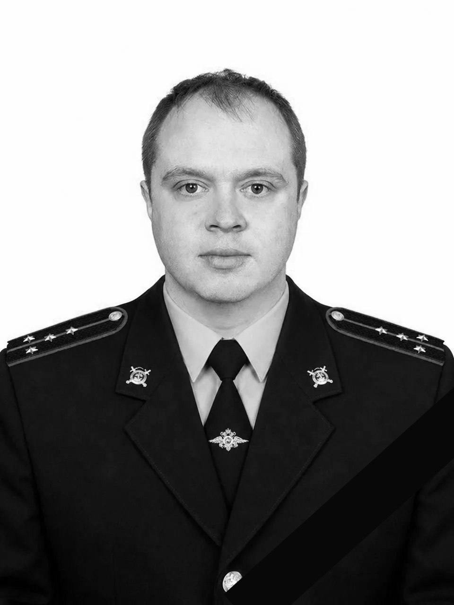

Топор Live
@toporlive
Топор Live
@toporlive
Полицейский погиб при задержании организаторов нарколаборатории в подмосковной деревне Паново.

⚡️Полицейский погиб при задержании организаторов нарколаборатории в подмосковной деревне Паново.
По данным следствия, 35-летний капитан Павел Шевяков вместе с коллегами прибыл на задержание.
После того как полицейские представились, преступник открыл дверь и выстрелил, смертельно ранив капитана.
Нападавшего ликвидировали ответным огнём. Шевяков служил в полиции с 2015 года.
👉 Топор Live. Подписаться
По данным следствия, 35-летний капитан Павел Шевяков вместе с коллегами прибыл на задержание.
После того как полицейские представились, преступник открыл дверь и выстрелил, смертельно ранив капитана.
Нападавшего ликвидировали ответным огнём. Шевяков служил в полиции с 2015 года.
👉 Топор Live. Подписаться